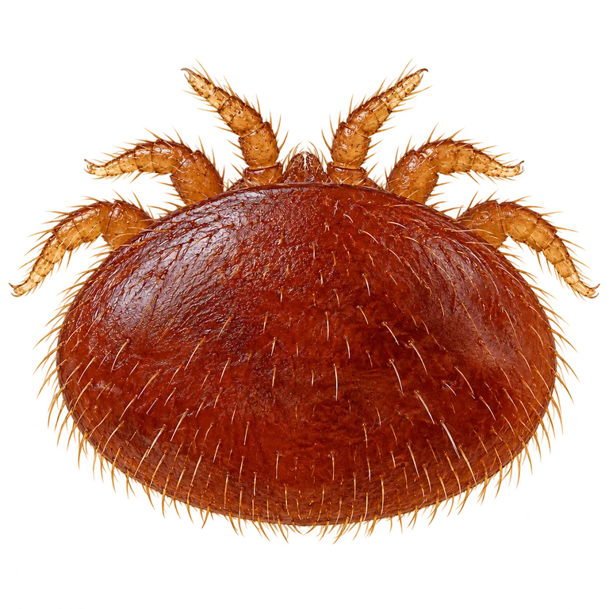
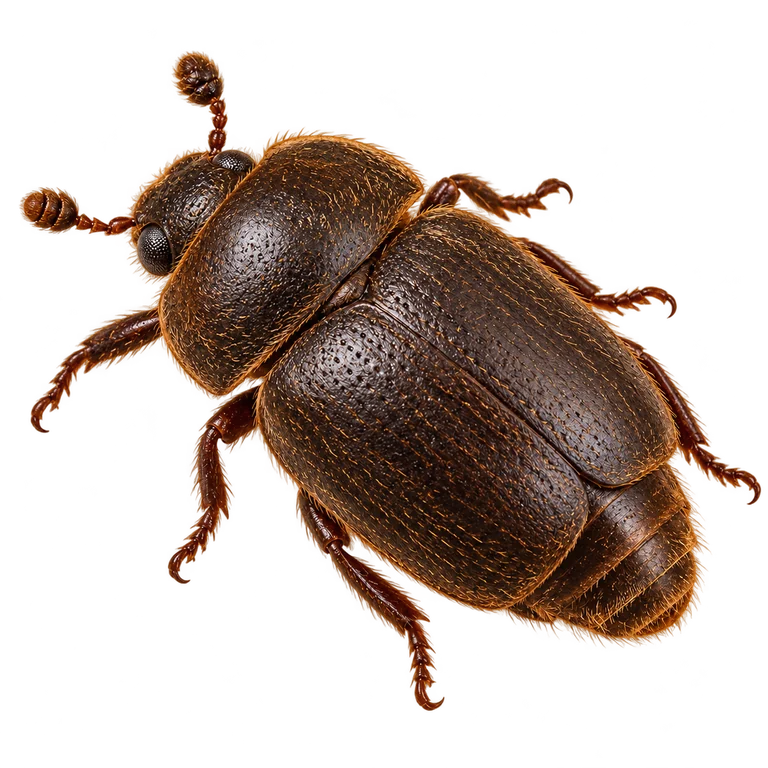
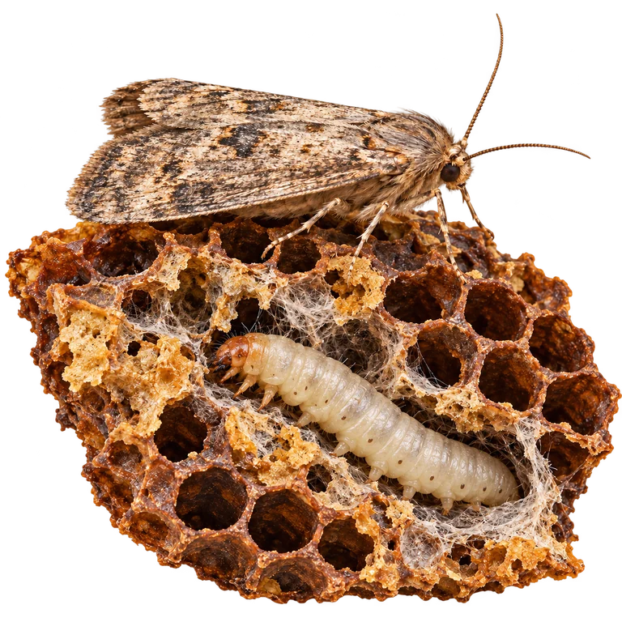

Snowman’s field guide · Southwest Kansas
Parasites & pests
Learn about common hive pests, how to spot them and what to do next.
Realistic illustrations, enlarged to show detail. Images are not to the same scale. Tap an illustration for a closer look.
Explore beekeeping Choose a topic
Priority pest
Varroa destructor

Varroa is an external parasitic mite. It reproduces with developing bees inside capped brood and can transmit damaging viruses. Mites seen on adult bees are only part of the population; the absence of visible mites does not prove a colony has a low infestation.
Monitor → decide → act → check again
Use a validated sampling method, such as an alcohol wash, with training that protects the queen. Interpret counts using current regional guidance, season and colony condition. Follow up after treatment to measure the result. Brood breaks, resistant stock and properly selected treatments can form parts of an integrated plan.
Where oxalic acid fits
Oxalic acid vaporization acts against mites on adult bees, but it does not penetrate capped brood. That means the amount of capped brood affects when this treatment is useful.
Use a registered product and follow its current label for application method, dose, timing, protective equipment and honey-super restrictions. Do not inhale the vapor. Requirements differ by product; a general article cannot substitute for its label.
Small hive beetle

Aethina tumida is a beetle, rather than a parasitic mite. Its larvae damage comb and can cause honey to ferment and become slimy. Beetles develop from eggs into larvae, then pupae and adults. The larvae leave the hive to pupate in soil.
Clues and care
Look for beetles hiding in crevices, larvae and fermenting or slimed comb. Keep the honey-handling area clean, extract promptly and avoid spreading infested equipment. Appropriate traps and colony-space management may help. One beetle sighting and a destructive larval infestation are different situations.
Wax moths

Moth larvae tunnel through comb and leave silk webbing and debris, particularly in unguarded stored comb or colonies unable to protect their space. Finding wax moths after a colony dies does not establish what killed the colony.
Clues and care
Look for webbed tunnels and damaged stored frames. Maintain suitable space for the bee population and protect comb in storage. Freezing can be part of storage management, followed by protection against reinfestation. Use extension guidance for effective time and temperature; ordinary household mothballs are not a substitute for bee-equipment guidance.
A parasite can also cause a disease
Nosema organisms are microscopic parasites that infect adult bees. You can read more about them on the diseases page. Read about nosema →
Educational guide · Updated October 21, 2026.
Observe your own colony and local conditions. For diagnosis or treatment decisions, use qualified local advice and the current product label.